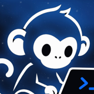
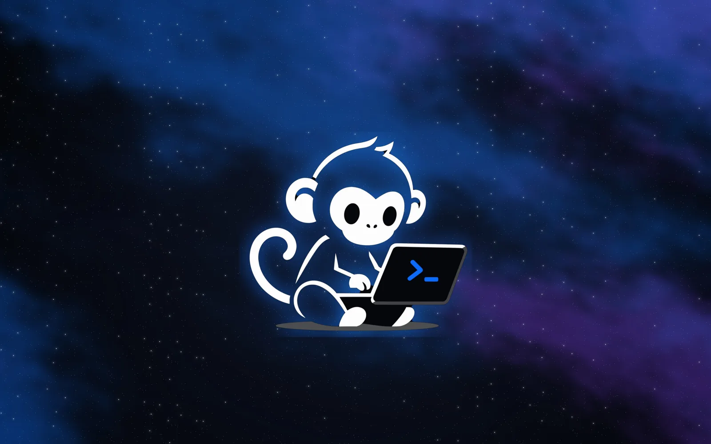

Descargar ISO
Imagen en vivo con instalador (x86_64, ~5 GB). Arranca en UEFI y BIOS.

monOSSistema operativo · Basado en Linux
monOS es nuestra propia distribución de Linux, armada para programar: entorno ligero, herramientas listas desde el primer arranque y una terminal que no estorba.

00 / Demo
Un recorrido por el escritorio, la terminal y las herramientas, grabado en una instalación real. Ver el video de lanzamiento ↗ Ver la presentación ↗
01 / Índice de características
Un repaso por las piezas que arman monOS, cada una con sus capturas.
02 / Capturas y funciones
03 / ¿Para quién es?
Mercado objetivo: estudiantes de informática y desarrolladores que quieren un sistema listo para programar sin configurar nada.
04 / Consíguelo
Graba la ISO en una USB, arranca el sistema en vivo para probarlo y, si te gusta, instálalo desde el escritorio con el instalador gráfico.
Imagen en vivo con instalador (x86_64, ~5 GB). Arranca en UEFI y BIOS.
Código fuente, scripts de build, lista de paquetes y documentación.
Dudas, reportes de errores y seguimiento del desarrollo.
Nota: la ISO está en Google Drive. Como pesa más de 100 MB, Drive avisa que no puede analizarla en busca de virus: elige "Descargar de todos modos". Grábala en una USB con Ventoy, balenaEtcher o dd.
04.1 / Antes de instalar
El instalador verifica el mínimo de disco y memoria antes de continuar.
Intel o AMD de 64 bits. Recomendado: 4 núcleos o más.
Recomendado: 8 GB o más para el escritorio, el navegador y contenedores.
Recomendado: 40 GB en SSD para paquetes opcionales y snapshots de Btrfs.
Secure Boot desactivado. Instala GRUB en ambos modos.
La ISO pesa unos 5.2 GB.
Intel, AMD o NVIDIA (driver abierto incluido). Internet opcional, solo para el software extra del instalador.
05 / Lo más destacado
Las tres cosas que más queremos mostrar de monOS.
06 / Lo que trae por dentro
Una muestra del software que viene listo apenas instalas monOS.
07 / Por qué lo hicimos
Construir un sistema operativo es entender cómo encajan sus piezas: el kernel, el entorno gráfico, las herramientas de desarrollo y la forma en que todo arranca junto.
monOS es nuestro intento de armar ese sistema pensando primero en quien programa.
Volver a explorar ↗08 / Proyecto académico
El equipo detrás de monOS, proyecto del curso de Sistemas Operativos.
♧ Carné: 4490-24-10243
♧ Carné: 4490-24-18866
♧ Carné: 4490-24-12438
♧ Carné: 4490-24-2092